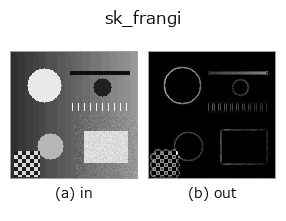

texture op• Datenarten: image → image
• Aufruf: fullseye.apply(img, "sk_frangi", a=0.5, b=0.5) (das 2-D-Modell ist ein Bild plus zwei skalare Regler a,b∈[0,1])
• HALCON-Äquivalent: lines_gauss (Bedeutung und Parameter sind in der HALCON-Referenz nachzulesen)

*Die Abbildung ist die tatsächliche Ausgabe auf einer synthetischen 128×128-Eingabe. Links Eingabe, rechts Ausgabe. Punktwolken als Draufsicht-Streudiagramm (Helligkeit = z), 1-D-Reihen als Linie, Volumen als Maximum-Projektion entlang z, Videos als mittleres Bild, komplexe Bilder als Betrag; Rückgabewerte, die kein Bild ergeben, werden als Werte gezeigt.*
*Die Ausgabe ist in einer viridis-artigen Falschfarbe dargestellt (dunkles Violett = klein, Gelb = groß), damit ein Feld von Größen — Abstand, Phase, Orientierung, Tiefe — lesbar ist.*
Regler a durchfahren (0,1 / 0,5 / 0,9, der andere Regler auf Standard):
▸ sk_frangi: knob a sweep (docs site)
Regler b durchfahren (0,1 / 0,5 / 0,9, der andere Regler auf Standard):
▸ sk_frangi: knob b sweep (docs site)
Auf anderen Bildern (synthetische Szene / Foto / Münzen. Obere Reihe: Eingaben, untere Reihe: deren Ausgaben. Regler auf Standard):
▸ sk_frangi: other inputs (docs site)
*Keine Farb-Eingabe (H,W,3) gezeigt: dieser Op behandelt den Farbkanal als dritte Raumachse (vermischt Kanäle). Pro Kanal aufrufen.*
Frangi-Filter zur Erkennung röhrenförmiger Strukturen (vesselness filter). Erkennt langgestreckte röhrenförmige Strukturen wie Blutgefäße, Falten oder Flüsse anhand der Eigenwertverhältnisse der Hesse-Matrix.
> Die ausführliche Beschreibung unten ist der Originaltext — Zusammenfassung und Überschriften sind übersetzt.
HALCON の lines_gauss(Detect lines and their width.)に相当(近似。線の幅や XLD 輪郭は返さず、応答強度の画像のみを返す)。2026-08-30 に a, b を配線した: a はスケール範囲(`sigmas=range(1, 2+round(a*4)) —— 最大 σ を 1〜5 に振る。a=0.5 で旧来の固定範囲 range(1,4) とビット一致)、b は Frangi の blobness 感度 β を 0.15〜0.85 に振る(b=0.5 で skimage 既定の 0.5 と一致し、既定出力は変わらない)。既定で black_ridges=True`(明るい背景上の暗い管を検出する)ため、白い背景に黒い線が乗った画像でないと応答が弱く出る点に注意。
• Leitfaden zur Familie gallery2d_texture_freq
• Katalog der Beispieldaten (Download-URLs / Lizenzen) — 2-D nutzt skimage.data (BSD/Public Domain) plus synthetische Bilder, 3-D nennt Download-URLs echter Datenquellen (Stanford, PDS, …).
• Herkunft und Literatur der Operatoren — die Quellen der Forschung/Verfahren, auf denen diese Operatorfamilie beruht.
• Der kanonische Algorithmus (Autor, Jahr) und seine Anwendungen stehen im Familienleitfaden oben.
Das Programm unten ist nachweislich lauffähig (gleiche Eingabe wie die Abbildung). In der Studio-Hilfe wird dieser Block zu Schaltflächen, die es sofort laden und ausführen.
sk_frangi 0.50 0.50
▸ Load this pipeline · Load & run
• gallery2d_texture_freq — py -3.11 examples/gallery2d_texture_freq.py
• poc_fresco_craquelure — py -3.11 examples/poc_fresco_craquelure.py
• poc_solar_el_inspection — py -3.11 examples/poc_solar_el_inspection.py
image als Eingabe)identity · gaussian · mean_box · bilateral · unsharp · median · min_filter · max_filter
texture)std_filter · gabor · sk_meijering · sk_hessian · sk_gabor · sk_lbp · sk_entropy · sk_shape_index
*Provenance: ops.py — 2D Operator-Registry. Diese Notiz wird von tools/opdocs.py md erzeugt (nicht von Hand bearbeiten).*
© 2026 Kazufumi Furuse — Fullseye operator documentation. Licensed under Apache-2.0.
{kind=link}
{kind=link}
{kind=link}